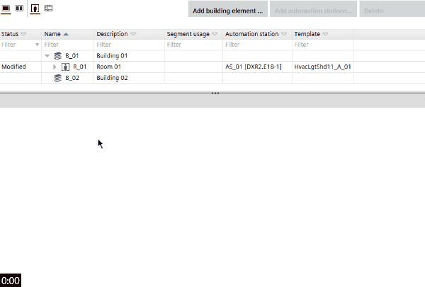
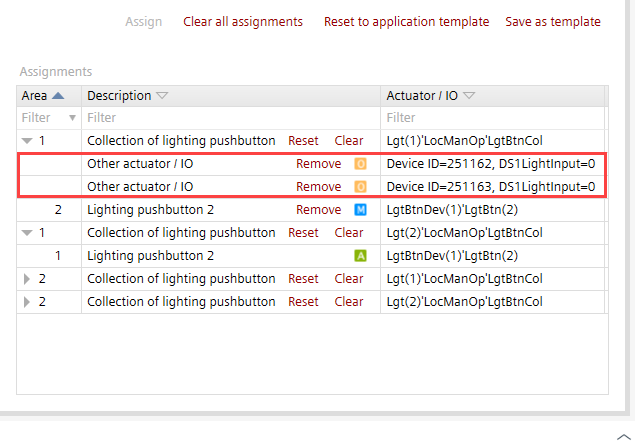

Assigning I/O's (areas)
You can change I/O assignments of rooms in Building > Building structure > Room and segment details > I/O assignment.

Assign I/O's of a type-based automation station
- Areas (rooms, room segments) are defined in the type-based automation station.
- The room view is activated, i.e., Show rooms
 .
.
- Select the room.
- In the Details pane, select the I/O assignment tab.
- Click Custom.
- The available buttons are displayed on the left, and the button collections on the right.
- Select the button on the left, e.g. Brightness (Brgt).
- Select the corresponding button collection on the right, e.g. Collection of lighting brightness (LgtBrgtCol).
- Click Assign.
- The button is assigned to the button collection, and the I/O is assigned. Manual assignments are marked by the icon.
- A Remove button is displayed, when an I/O is assigned. The Remove button is located in the Description column of the target table next to assigned I/O.
- Repeat steps 4 to 6, until all I/O's are assigned.
- Optionally, click Save as template to save the I/O assignment for future use.
- If you save the I/O assignment, you can later select it in the Template view.
Applying saved I/O assignments
Uploading of online assigned I/Os
You can upload the I/O configuration that was assigned online to actuators (e.g. in Desigo CC).

- Upload a device configuration.
Uploading a device configuration - Go to Building tab.
- In the Details pane, select the I/O assignment tab.
- Online assigned I/Os are indicated by the device ID and object ID.
- Uploaded and online assigned I/Os are marked by the icon.